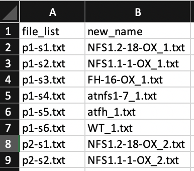

Batch renaming plant science data files in python
First of all generate a .csv with two columns, the first column called "file_list" which contains your list of files to renameand a column called "new_name" with your new desired names.
Please see my Tidyverse R code for one method of generating list of file names in a folder.

Then follow the below python code. I personally use Juypter Notebook to run through the code.